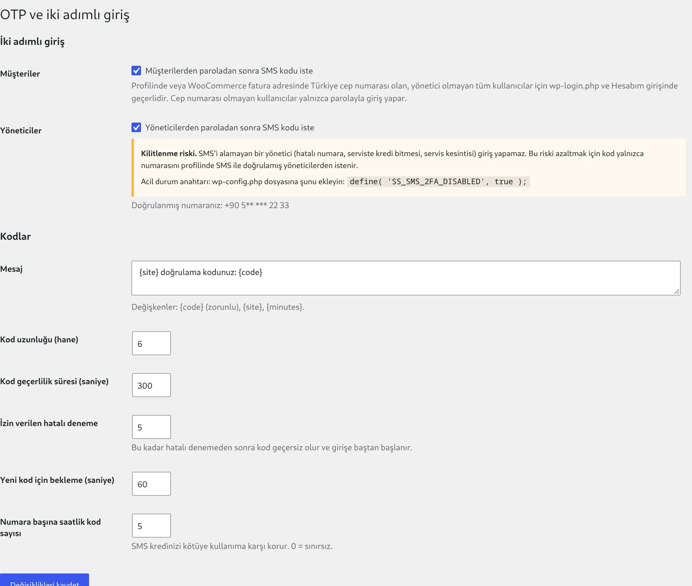
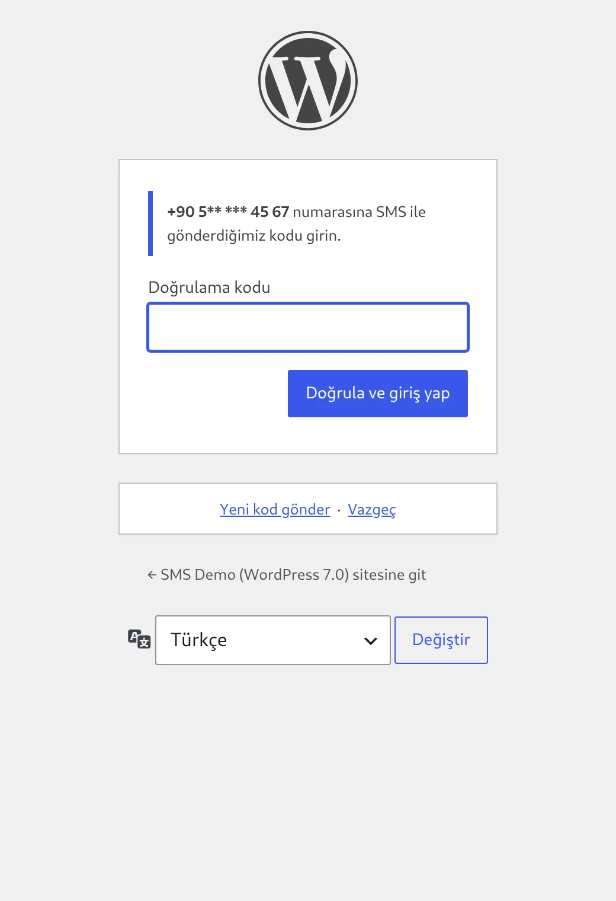
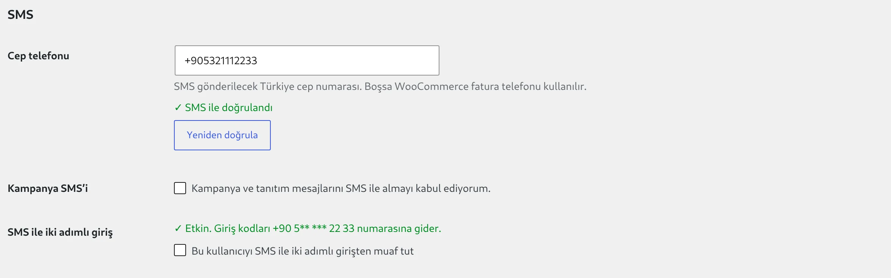

Müşteri girişinde 2FA
WooCommerce Hesabım ve wp-login.php girişinde, paroladan sonra SMS kodu istenir.
- Fatura telefonu otomatik kullanılır
- Numarası olmayan müşteri parolayla girer
- Giriş sonrası kaldığı sayfaya döner
Müşterileriniz ve yöneticileriniz paroladan sonra telefonlarına gelen tek kullanımlık kodla giriş yapar. Kendi formlarınız için de hazır OTP altyapısı.


Parola doğru girildiğinde oturum hemen açılmaz. Kod telefona gider, oturum ancak doğru kodla açılır.
WooCommerce Hesabım ve wp-login.php girişinde, paroladan sonra SMS kodu istenir.
Yönetici hesapları için ayrı bir kutucuk vardır ve varsayılan olarak kapalıdır; bilinçli olarak açılır.
Kullanıcı profilindeki "Doğrulama kodu gönder" ile numarasını SMS'le kanıtlar; sayfa yenilenmeden tamamlanır.
Giriş formu SMS kredinizi tüketmek için kullanılamaz.
Kodlar rastgele üretilir, tek kullanımlıktır, veritabanında yalnızca şifrelenmiş özeti tutulur ve SMS kayıtlarında içerik gizlenir.
2FA'lı hesaplar XML-RPC ve REST üzerinden parolayla giriş yapamaz; makineler için uygulama parolası kullanılır.
SMS metni, kod uzunluğu (4 ile 8 hane), geçerlilik süresi ve deneme hakkı panelden ayarlanır.
{site} doğrulama kodunuz: {code}Bülten kaydı, telefon doğrulama, randevu onayı gibi akışlara iki fonksiyonla SMS doğrulaması ekleyin.
ss_sms_otp_send()ss_sms_otp_verify()"Deneyin" bölümünden kendinize kod gönderip doğrulayarak tüm akışı canlıya almadan test edin.
SMS ulaşmadığında (hatalı numara, kredi bitmesi, servis kesintisi) yönetici panele giremezse bu bir güvenlik özelliği değil, bir arızadır. Eklenti bunu dört katmanda önler.
wp-config.php içine tek satırla tüm 2FA kapanır
Sanal Santral SMS eklentisinin üzerine kurulur, aynı hesap ve aynı başlıkla çalışır. Kurulum birkaç dakika sürer.